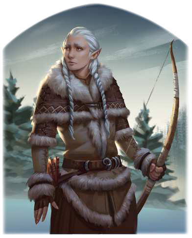

"Ich bin des sinnlosen Blutvergießens überdrüssig. Es sollte keinen Kampf mehr geben, nur die Jagd nach denen, die ihn anstacheln. Selbst wenn in mir die Sehnsucht nach dem ewigen Frost brennt, weiß ich, dass meine Sippe verloren ist. Nie wieder kann ich eine echte Heimat inden, außer in meiner Tochter, und sie hat eben die Auen gewählt. So kann ich aber immerhin etwas Gutes tun, denn ich kann zwischen Rosenohren und den fey vermitteln."
Elodiron ist eine verlorene Wanderin in einer grausamen Welt. Ihre ganze Sippe, die am Blauen See lebte, wurde einst durch einen Gletscherwurm ausgelöscht. Voller Trauer zog Elodiron nach Süden und lebte unter Menschen, weil sie die eisigen Weiten zu sehr an das erinnerten, was sie verloren hatte. Die Firnelfe war bis zu seinem Tod die Geliebte des albernischen Fürsten Halman und stritt in seinem Gedenken sogar auf dem großen Feldzug des Mittelreiches gegen Maraskan. Bis heute aber ist ihr Herz von unstillbarem Heimweh zerrissen und so zog sie sich nach dem Schrecken des Krieges mit ihrer neugeborenen Tochter aus der Menschenwelt zurück. Elodiron ist seit über 100 Jahren die Verkörperung einer Wanderin zwischen den Welten, hin und her gerissen zwischen der Welt der Menschen und der Elfen. Viele mittelreichische Adlige schätzen sie als Mittlerin zwischen den Kulturen, denn sie leiht ihre Stimme auch jenen, deren Anliegen vielleicht hoffnungslos erscheinen.
Volkes Stimme
- "Wir wären nicht hier, hätte sie uns nicht geholfen. Zwar verstehen wir nicht immer, was die Elfen wirklich von uns erwarten, aber wir sind dankbar, dass sich jemand unserer angenommen hat."
- "Dieses Spitzohr ist krank! Sie heult beständig der Vergangenheit hinterher, dabei sollte sie sehen, dass wir Menschen jetzt am Ruder sitzen."